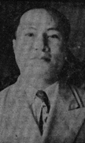

THE MANILA BULLETIN
November 14, 1949
W.H.O. CHOOSES LOCAL DOCTOR
Dr. Jaime E. Laico, assistant professor in surgery, University of the
Philippines, and the first Filipino to specialize in plastic surgery, is
leaving for the United States and Europe by air Nov. 16, as a World Health
Organization fellow in post-graduate studies in plastic surgery.
He wilI be away seven months during which he will visit leading surgical universities in London, United States and Rome.
A native of Magdalena, Laguna, Dr. Laico is credited with being the first-Filipino surgeon to perform a successful skin-grafting operation before the war.
He was chosen from among the scores of applicants by the UNICEF staff in Bangkok and the WHO general headquarters in Geneva.